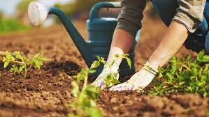
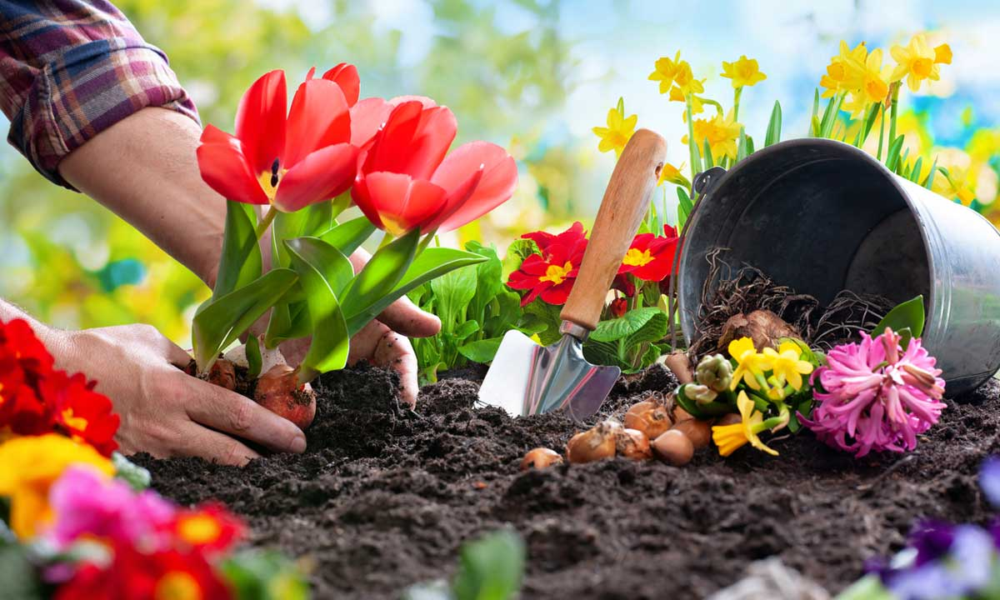
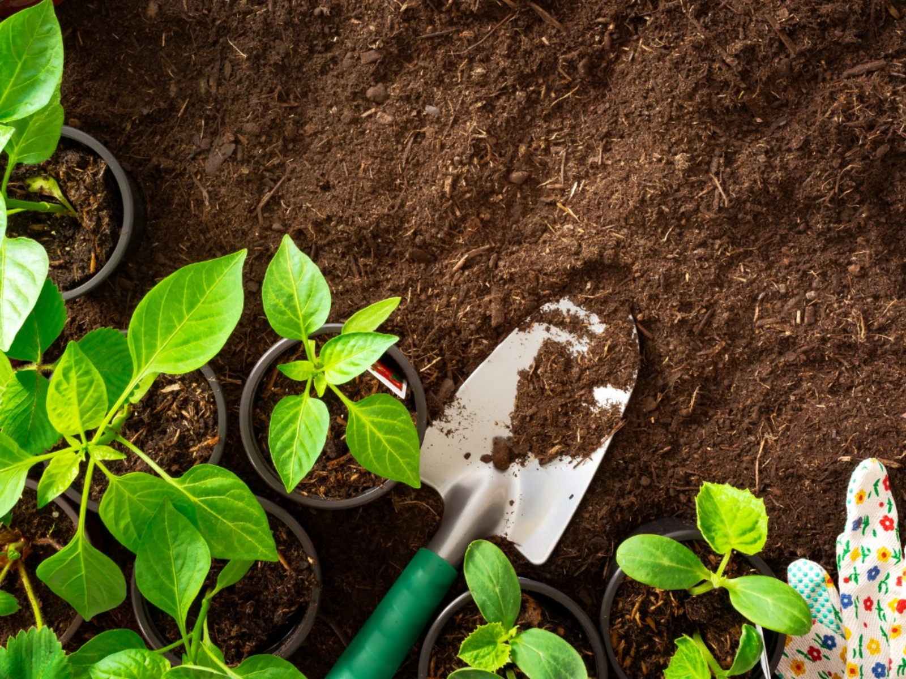
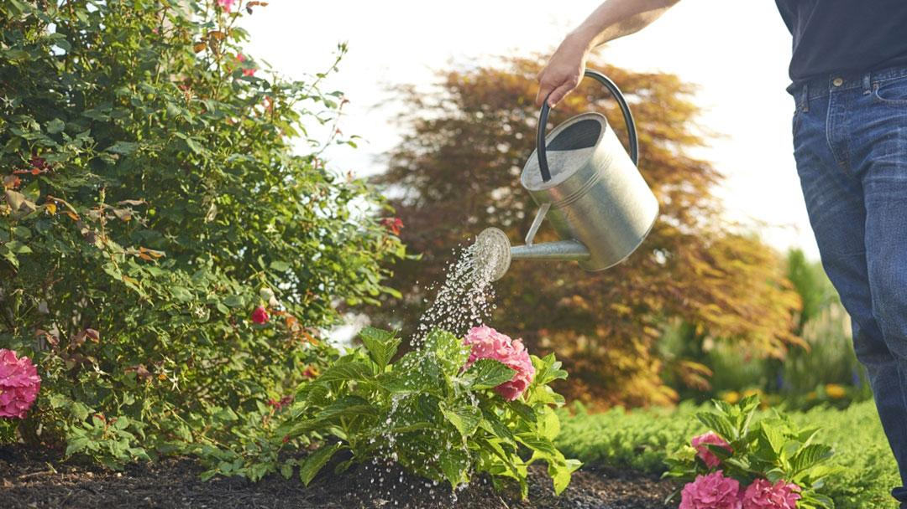
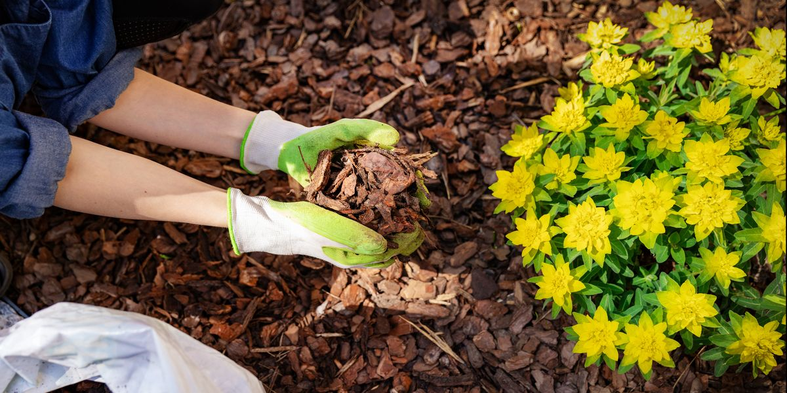
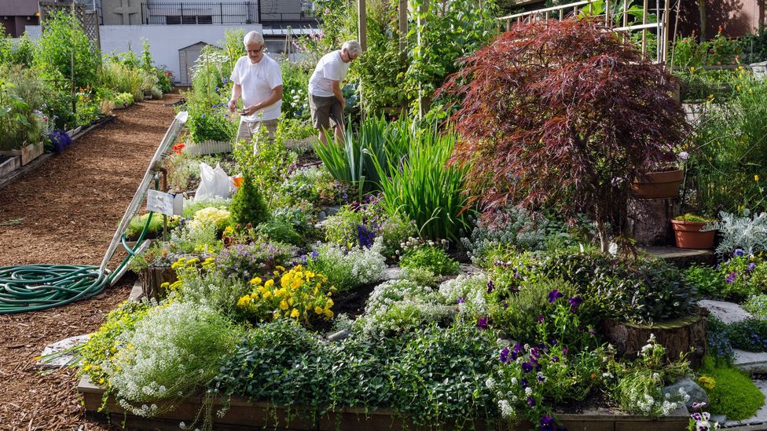

Ten Steps to Starting a Garden
- Choose the right location
- Pick the Best Garden Spot
- Clear the Ground
- Test and Improve Your Soil
- Prepare Your Planting Beds
- Pick Your Plants
- Start Planting
- Water at the Right Time
- Protect Your Garden With Mulch
- Maintain Your Garden Regularly
1. Choose the right location
Consider What to Plant Do you want to plant a vegetable garden? An herb garden? A flower garden? If you choose vegetables and herbs for their contributions to your dinner table, plant ones your family will eat or be willing to try. If you want flowers for their flair, color, and fragrance, decide whether you want annuals that bloom most of the summer but need to be replanted each spring or perennials that have a shorter bloom time but return year after year. Each one, or even a combination, makes a stunning garden but will have different maintenance requirements. One bit of advice: Start small until you know what you’re getting into. Related: What You Need to Know to Start Your First Vegetable Garden
2. Pick the Best Garden Spot
Almost all vegetables and many types of flowering plants need 6-8 hours of full sun each day. So you need to observe your yard throughout the day to figure out which spots receive full sun versus partial or full shade. Don't worry if your yard is mostly shady: You won’t be able to grow tomatoes in shade, but many other plants (such as hostas and outdoor ferns) will do just fine. Check plant tags or ask the staff at your local garden center to help you understand out how much sun a plant needs. If possible, pick a relatively flat spot for your garden because it’s more difficult, time-consuming, and potentially expensive to deal with a sloping garden. And make sure your new garden will have easy access to a water source. Person raking soil
3. Clear the Ground
Get rid of weeds and sod in the area you plan to plant. If you want quick results (if it’s already spring and you want veggies this summer), cut it out. Slice under the sod with a spade, cut the sod into sections to make it easier to remove, then put it on your compost pile to decompose. For a longer term project, it’s easier to use the lasagna gardening method: Cover your future garden with five sheets of newspaper; double that amount if your lawn is Bermuda grass or St. Augustine grass. Spread a 3-inch layer of compost (or combination of potting soil and topsoil) on the newspaper and wait. It'll take about four months for the compost and paper to decompose. But if you start in the fall, by spring you’ll have a bed ready to plant with no grass or weeds and plenty of rich soil.
4. Test and Improve Your Soil
To learn more about your soil, have a soil test done through your county cooperative extension office. They'll lead you through the procedure: How much soil to send from which parts of the garden and the best time to obtain samples. Expect a two-week wait for the findings, which will tell you what your soil lacks and how to amend it. You can also use a DIY kit that may not be as detailed, but will give you an idea of your soil's nutrient levels. Residential soil almost always needs a boost, especially in new construction where the topsoil may have been stripped away. In addition to being low in essential plant nutrients, your soil may also have poor drainage or be compacted. The solution is usually simple: Add organic matter. Add a 2- to 3-inch layer of compost, decayed leaves, dry grass clippings, or old manure to the soil when you dig or till a new bed. If you decide not to dig or are working with an established bed, leave the organic matter on the surface where it will eventually rot into humus (organic material). Earthworms will do most of the work of mixing humus in with the subsoil.

5. Prepare Your Planting Beds
Loosening the soil in new beds before sowing or planting helps roots to grow more easily and access the water and nutrients they need. There are two methods: tilling with a mechanical device such as a rototiller or digging by hand. The first one is a good method when you need to mix in large amounts of amendments. However, it's easy to overdo it, which will end up damaging soil structure. Digging is more practical for preparing small beds. Either way, work the soil only when it's moist enough to form a loose ball in your fist but dry enough to fall apart when you drop it. Digging when the soil is too dry is harder work, and you can damage the soil structure if it's too wet. Use a spade or spading fork to gently turn the top 6-8 inches of soil, mixing in the organic matter from Step 4 at the same time. (Walking on prepared beds compacts the soil, so lay down plywood boards temporarily to evenly distribute your weight.) Person pouring seeds into soil

6. Pick Your Plants
Some people pore over catalogs for months; others head to the garden center and buy what wows them. Either method works as long as you choose plants adapted to your climate, soil, and sunlight. You can even surf the Internet for plants to purchase. Here are a few easy-to-grow plants for beginners: Annuals: Calendula, cosmos, geraniums, impatiens, marigolds, sunflowers, and zinnias Perennials: Black-eyed Susans, daylilies, lamb's ears, pansies, phlox, purple coneflowers, and Russian sage Vegetables: Cucumbers, lettuce, peppers, and tomatoes

7. Start Planting
Some plants, such as pansies and kale, tolerate cold, so you can plant them in autumn or late winter. Tomatoes and most annual flowers, on the other hand, prefer warm temperatures, so don't plant them until the danger of frost has passed in your area. Midspring and midautumn are good times to plant perennials. Many annuals are easy to grow from seed sown directly in the garden. Be sure to read the seed packet for information about planting time, depth, and spacing. If you're an adventurous beginner, get a head start on the growing season by sowing seeds indoors a few weeks before the last frost date. There are containers or flats designed especially for seedlings and seed-starting soil mixes available at garden centers. Follow seed packet instructions and place the containers on a sunny windowsill or under grow lights if you don't have window space. Be sure to keep the seeds and seedlings moist but not wet, or they may rot. Related: 6 Tips for Planting a Beautiful Container Garden Every Time An easier method of starting your garden is to buy young plants, called set plants or transplants. Dig holes in your prepared bed based on tag instructions. Remove plants from the container by pushing up from the bottom. If the roots have grown into a big ball (known as being root-bound), use an old fork or your fingers to untangle some outer roots before setting it into the hole. Pat soil into place around the roots, then soak the soil with water. Person watering garden
8. Water at the Right Time
Seedlings should never be allowed to dry out, so water daily. Taper off as the plants get larger. Transplants also need frequent watering (every other day or so) until their roots become established. After that, how often you need to water depends on your soil, humidity, and rainfall, though once a week is a good place to start. Clay soil dries out more slowly than sandy soil, so you won't need to water it as often. Sunny, windy conditions dry out soil more quickly than cool, cloudy weather. Still not sure? Feel the soil 3-4 inches below the surface. If it feels dry, it’s time to water. Water slowly and deeply, so the water soaks in instead of running off. To minimize evaporation, water in the early morning.
9. Protect Your Garden With Mulch
To help keep weeds out and moisture in, cover the soil with a couple of inches of mulch. You won’t have to water as often, and by preventing sunlight from hitting the soil, you’ll prevent weed seeds from germinating. Choose from a wide variety of mulches, each with its own benefits, including shredded bark, straw, and river rock. If you use organic mulch, such as bark, compost, or cocoa bean shells (which smell good, by the way), it will nourish the soil as it decomposes. For a vegetable garden or bed of annuals, choose a mulch that decomposes in a few months. For perennials, use a longer-lasting mulch such as bark chips.
10. Maintain Your Garden Regularly
As your garden begins to grow, help it reach its full potential by keeping up with garden chores. Water the plants before they wilt. Pull weeds before they go to seed. Get rid of dead, dying, and diseased vegetation. Banish destructive insects by picking them off the plant and dropping them into a bucket of sudsy water (such as tomato hornworms), hosing them off, or spraying on an insecticidal soap purchased at a garden center. Support tall plants (such as tomatoes) with a trellis, stake, or a tepee. Also, harvest vegetables as soon as they’re ready. And remember to stop and smell the...well, whatever it is you’re growing.